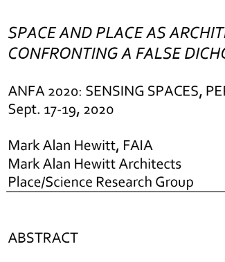
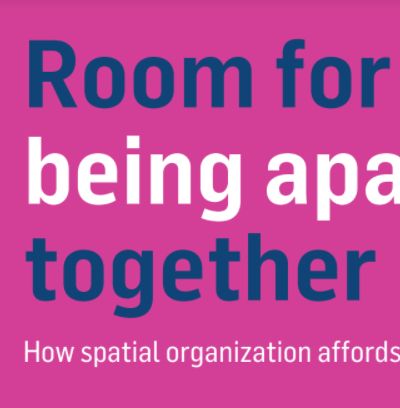
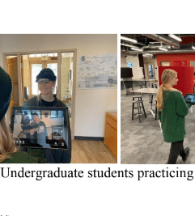
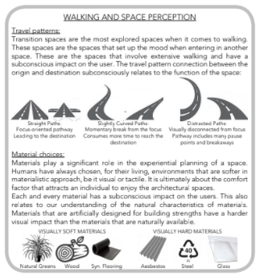

Posters | Spatial Interactions & Navigation
Posters aren't eligible for credit

Andrea de Paiva

Mark Alan Hewitt

Joori Suh , Ji Young Cho

Ann Heylighen

Ercument Gorgu,Chaoran Chen


Alexander Johnson, Douglas Nitz

Dr. Mizan Rambhoros, Dr. Matthew Pelowski


Sudhir Kumar Pasala,Mehdi Khamassi

Yang Chen Lin,Chih Mao Huang